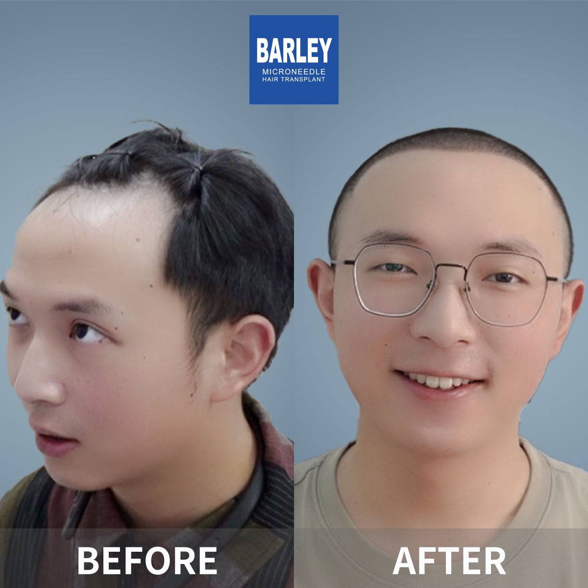

Explore answers organized by topic - from first consultation to full recovery
The essential stats every patient wants to know before deciding
Depends on graft count selected for your case
Most remote workers resume within 48 hours
New hair follicles begin emerging through scalp
Complete shaft thickness and final density
Documented in our 12-month follow-up audits
Transplanted follicles remain DHT-resistant forever
Genuine before-and-after results from our surgical team





Real patients share how reading through these answers changed their decision process
"I read every single FAQ on this page the weekend before my consultation. When I walked in, I already understood 90% of what was going to be discussed. We spent my actual appointment time on fine-tuning my hairline shape and donor strategy instead of basics. Honestly this page saved me at least an hour and made my consultation way more productive. I'm now 5 months post-op and couldn't be happier."
"What I loved was how transparent this FAQ was about risks. I went into my first meeting already knowing about shock loss, scarring possibilities, and the realistic 12-month timeline. I wasn't hit with any 'wait, you never told me that' bombshells mid-way like my friend was at another clinic. Honesty like this is worth paying a premium for in my book. Ten months in, my result has exceeded even the realistic expectations I set."
"I had researched four clinics across three countries before finding Barley. What made me book here was the FAQ didn't feel like marketing fluff. They actually compared themselves honestly to Turkey, explained why some cheap quotes are misleading, and acknowledged the limitations of surgery for advanced cases. No pressure, no hype, just straight facts. That level of transparency made me trust them with my procedure and I'm so glad I did."
"I used this FAQ to build my own comparison spreadsheet between three clinics I was considering. The breakdown of per-graft pricing, what's included vs extra, graft survival claims, and surgeon vs technician involvement gave me concrete items to ask each clinic about. Two of the clinics dodged my questions; Barley answered every single one directly. That alone told me everything I needed to know. Booked the next week."
Take a look inside our state-of-the-art surgical facility in central Beijing

Comfortable, quiet post-operative care

Welcoming and modern entrance lobby

Fully equipped with the latest technology

Relax in our premium waiting area

Strict sterile environment for optimal safety

Private and professional one-on-one sessions
Click any card below to copy contact information instantly
15810155700
+86 13730143529
hairtransplant@qq.com

Every patient's hair loss pattern and goals are unique. Our international patient specialists help identify the root cause of your loss and build a personalized restoration roadmap. If you have questions we have not covered above, just ask - our coordinators respond to WhatsApp messages within 2 hours during Beijing business hours.